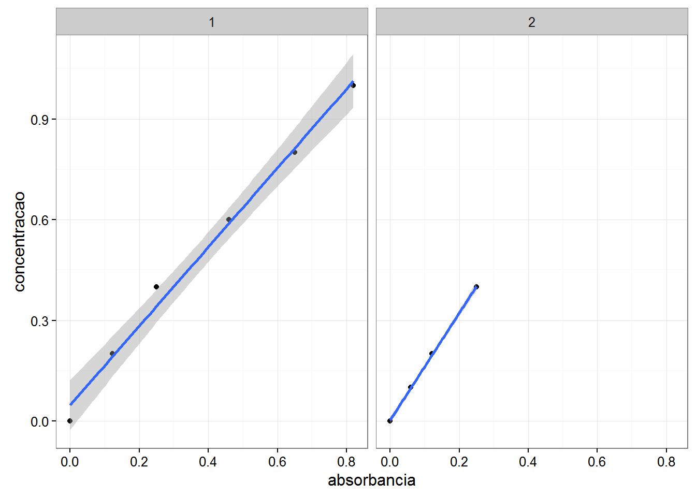
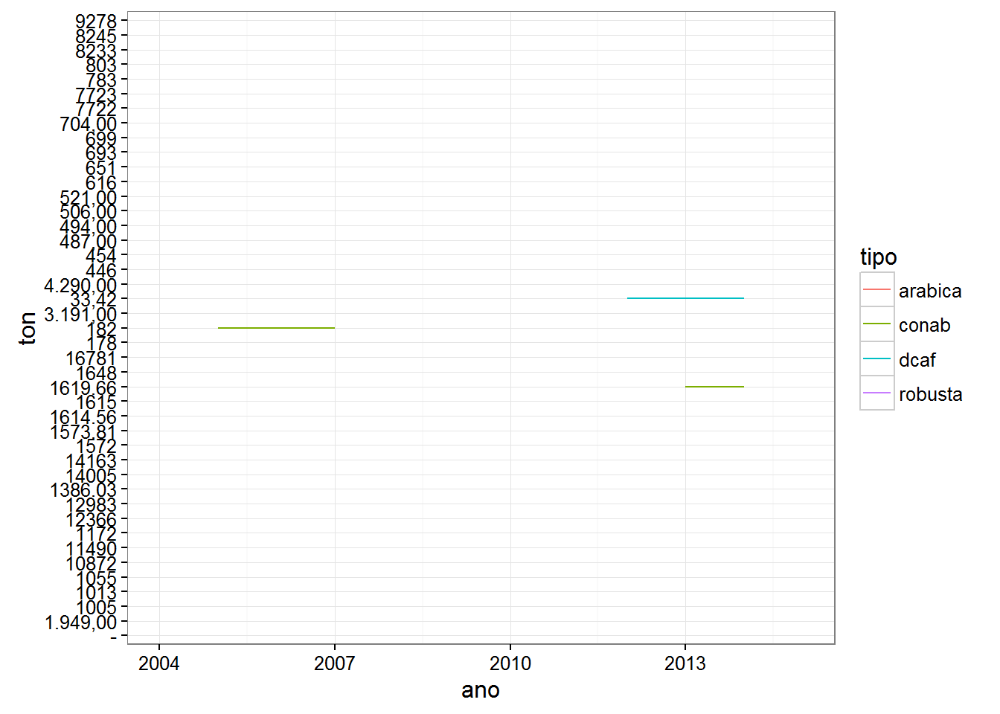
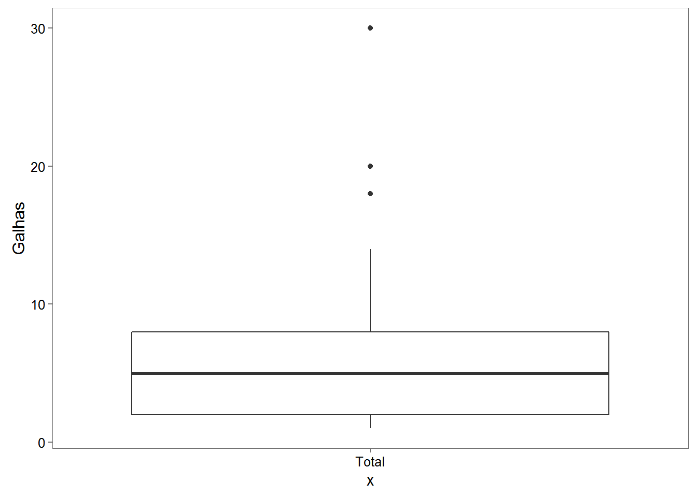
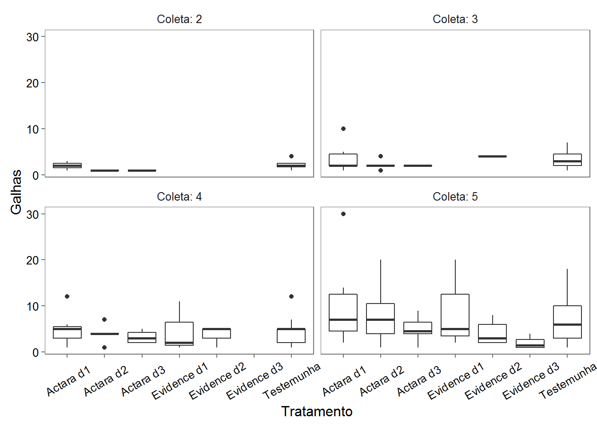
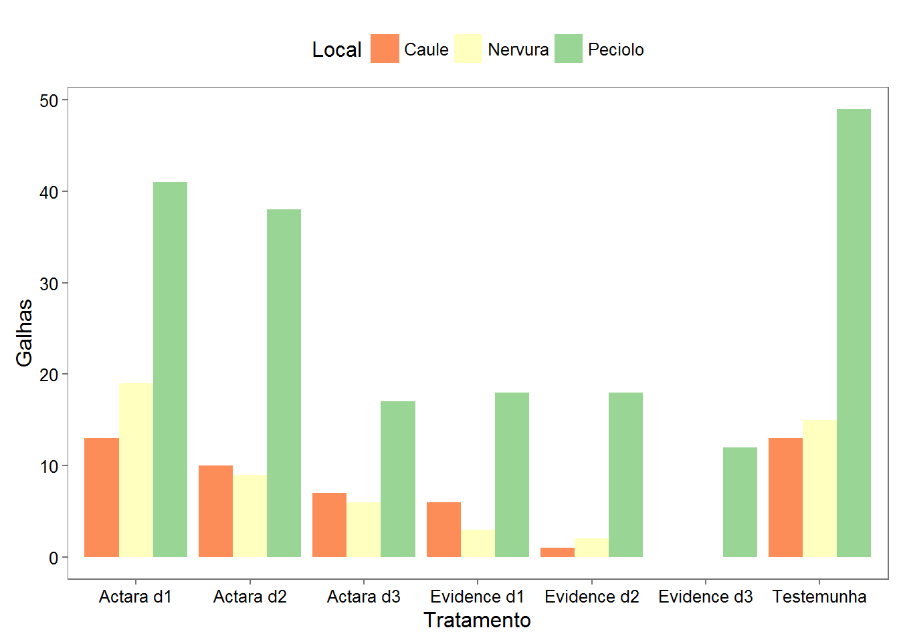
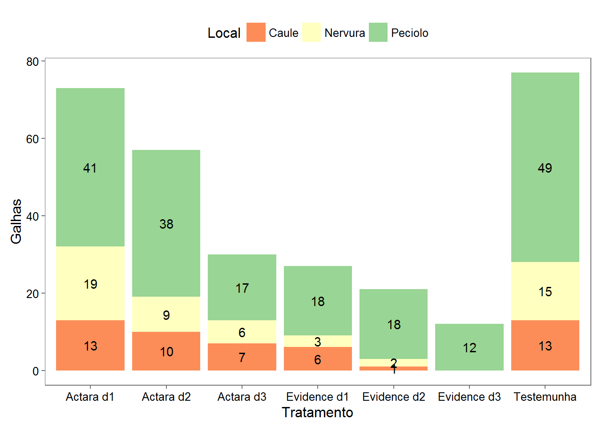
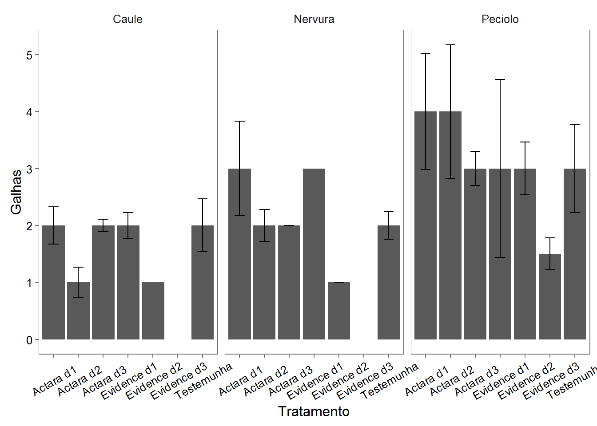
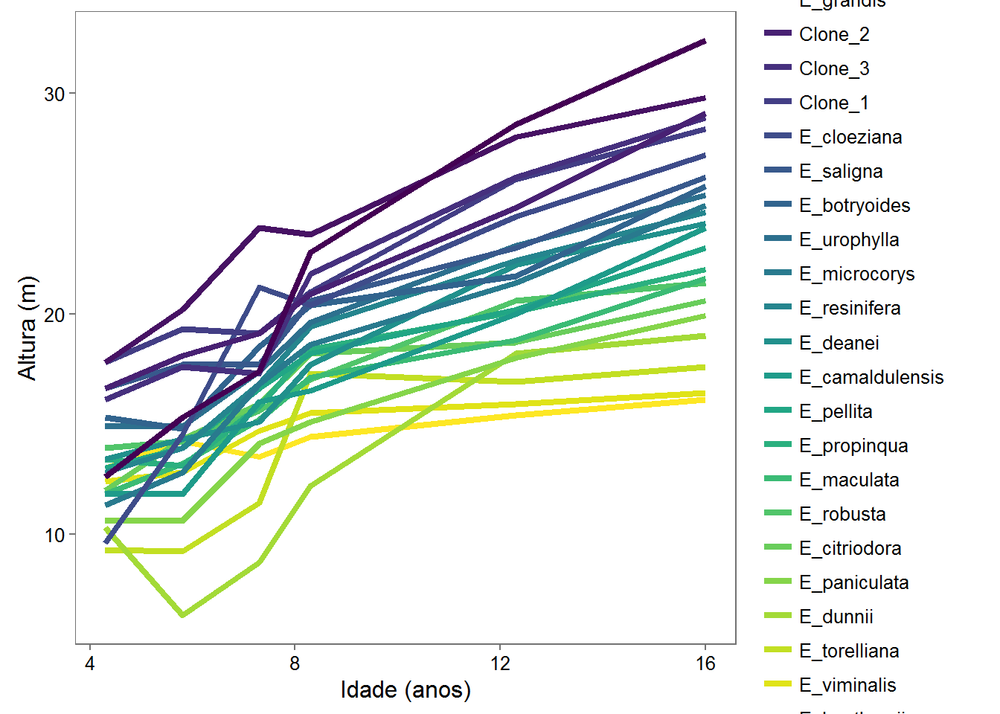
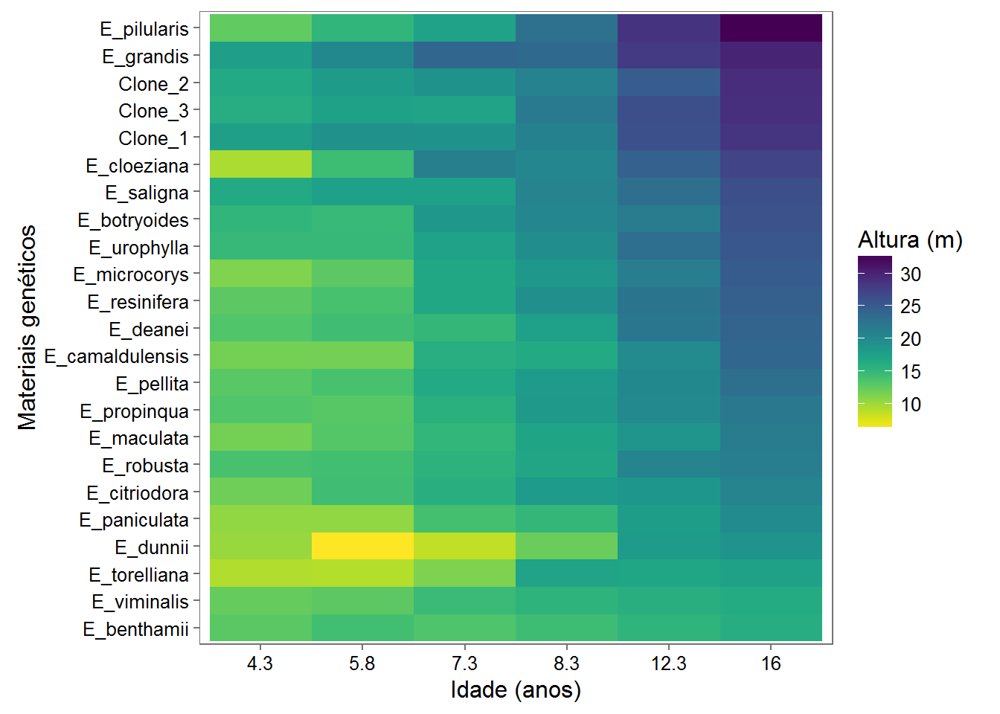

library(pacman)
p_load(readr, readxl, dplyr, tidyr, lubridate, ggplot2, ggthemes, ggpmisc)padrao <- read_csv2("dados/absorbancia_padrao.csv")
padrao## # A tibble: 10 x 3
## grupo concentracao absorbancia
## <int> <dbl> <dbl>
## 1 1 0.0 0.000
## 2 1 0.2 0.122
## 3 1 0.4 0.250
## 4 1 0.6 0.460
## 5 1 0.8 0.650
## 6 1 1.0 0.820
## 7 2 0.0 0.000
## 8 2 0.1 0.060
## 9 2 0.2 0.122
## 10 2 0.4 0.250ggplot(padrao, aes(absorbancia, concentracao)) +
geom_point() +
facet_wrap(~grupo) +
theme_bw()ggplot(padrao, aes(absorbancia, concentracao)) +
geom_point() +
geom_smooth(method = "lm") +
facet_wrap(~grupo) +
theme_bw()
ggplot(padrao, aes(absorbancia, concentracao)) +
geom_point() +
geom_smooth(method = "lm") +
stat_poly_eq(aes(label = paste(..eq.label.., ..rr.label.., sep = "~~~~")), formula = y ~ x, parse = TRUE) +
facet_wrap(~grupo) +
theme_bw()carne <- read_csv2("dados/carne.csv")
carne_t1 <- carne %>%
gather(ano, ton, 2:dim(.)[2]) %>%
mutate(ano = ymd(paste(ano, 01, 01, sep = "-")))
carne_t1## # A tibble: 33 x 3
## tipo ano ton
## <chr> <date> <dbl>
## 1 producao 2005-01-01 119019.000
## 2 importacao 2005-01-01 69474.500
## 3 exportacao 2005-01-01 1753.056
## 4 producao 2006-01-01 106087.000
## 5 importacao 2006-01-01 89651.222
## 6 exportacao 2006-01-01 3201.433
## 7 producao 2007-01-01 91743.000
## 8 importacao 2007-01-01 101547.725
## 9 exportacao 2007-01-01 832.395
## 10 producao 2008-01-01 108540.000
## # ... with 23 more rowscarne_t1 %>%
ggplot(aes(ano, ton, fill = tipo)) +
geom_area() +
theme_bw()carne_t2 <- carne_t1 %>%
spread(tipo, ton) %>%
mutate(consumo = importacao + producao - exportacao)
carne_t2## # A tibble: 11 x 5
## ano exportacao importacao producao consumo
## <date> <dbl> <dbl> <dbl> <dbl>
## 1 2005-01-01 1753.056 69474.50 119019 186740.44
## 2 2006-01-01 3201.433 89651.22 106087 192536.79
## 3 2007-01-01 832.395 101547.73 91743 192458.33
## 4 2008-01-01 3439.967 92360.43 108540 197460.46
## 5 2009-01-01 6622.814 94908.02 102995 191280.21
## 6 2010-01-01 7469.794 100423.25 93159 186112.46
## 7 2011-01-01 7926.410 87503.52 96003 175580.11
## 8 2012-01-01 9031.132 80665.27 92988 164622.14
## 9 2013-01-01 7177.330 87790.19 84011 164623.86
## 10 2014-01-01 5892.996 97222.71 79842 171171.72
## 11 2015-01-01 9710.259 94022.47 0 84312.21carne_t3 <- carne_t2 %>%
select(ano, producao, consumo) %>%
gather(tipo, ton, -ano)
carne_t3## # A tibble: 22 x 3
## ano tipo ton
## <date> <chr> <dbl>
## 1 2005-01-01 producao 119019
## 2 2006-01-01 producao 106087
## 3 2007-01-01 producao 91743
## 4 2008-01-01 producao 108540
## 5 2009-01-01 producao 102995
## 6 2010-01-01 producao 93159
## 7 2011-01-01 producao 96003
## 8 2012-01-01 producao 92988
## 9 2013-01-01 producao 84011
## 10 2014-01-01 producao 79842
## # ... with 12 more rowscarne_t3 %>%
ggplot(aes(ano, ton, color = tipo)) +
geom_line() +
theme_bw()cafe <- read_csv2("dados/cafe.csv")cafe_t1 <- cafe %>%
gather(tipo, ton, arabica, robusta, dcaf, conab) %>%
mutate(estoque = ifelse(tipo %in% c("arabica", "robusta"), "privado", "governo"))
cafe_t1## # A tibble: 48 x 4
## ano tipo ton estoque
## <int> <chr> <dbl> <chr>
## 1 2004 arabica 7723 privado
## 2 2005 arabica 10872 privado
## 3 2006 arabica 9278 privado
## 4 2007 arabica 16781 privado
## 5 2008 arabica 11490 privado
## 6 2009 arabica 14005 privado
## 7 2010 arabica 8245 privado
## 8 2011 arabica 8233 privado
## 9 2012 arabica 7722 privado
## 10 2013 arabica 12366 privado
## # ... with 38 more rowscafe_t1 %>%
ggplot(aes(ano, ton, color = tipo)) +
geom_line() +
theme_bw()
cafe_t1 %>%
ggplot(aes(ano, ton, color = tipo)) +
geom_line() +
facet_wrap(~estoque, nrow = 2) +
theme_bw()ferm <- read_csv2("dados/fermentacao.csv")
ferm## # A tibble: 96 x 5
## composicao dia repeticao fermentacao ph
## <chr> <int> <int> <dbl> <dbl>
## 1 A 1 1 3.433333 7.2
## 2 A 1 2 3.433333 7.2
## 3 A 2 1 3.433333 7.2
## 4 A 2 2 3.433333 7.2
## 5 A 3 1 3.433333 7.2
## 6 A 3 2 3.433333 7.0
## 7 A 4 1 3.233333 7.0
## 8 A 4 2 3.233333 7.0
## 9 A 5 1 3.233333 6.8
## 10 A 5 2 3.233333 6.8
## # ... with 86 more rowsggplot(ferm, aes(dia, fermentacao, shape =composicao, color = factor(repeticao))) +
geom_point() +
geom_line() +
theme_bw()dados <- read_csv2("dados/base_vespa.csv")
dados## # A tibble: 2,100 x 5
## Tratamento Individuo Coleta Local Galhas
## <chr> <int> <int> <chr> <int>
## 1 Actara d1 1 1 Peciolo 1
## 2 Actara d1 2 1 Peciolo NA
## 3 Actara d1 3 1 Peciolo NA
## 4 Actara d1 4 1 Peciolo NA
## 5 Actara d1 5 1 Peciolo NA
## 6 Actara d1 6 1 Peciolo NA
## 7 Actara d1 7 1 Peciolo NA
## 8 Actara d1 8 1 Peciolo NA
## 9 Actara d1 9 1 Peciolo NA
## 10 Actara d1 10 1 Peciolo NA
## # ... with 2,090 more rowstotal <- dados %>%
filter(Coleta == 5) %>%
group_by(Tratamento, Individuo) %>%
summarise(Galhas = sum(Galhas, na.rm=T)) %>%
mutate(Galhas = replace(Galhas, Galhas == 0, NA))
total## Source: local data frame [140 x 3]
## Groups: Tratamento [7]
##
## Tratamento Individuo Galhas
## <chr> <int> <int>
## 1 Actara d1 1 11
## 2 Actara d1 2 NA
## 3 Actara d1 3 4
## 4 Actara d1 4 NA
## 5 Actara d1 5 NA
## 6 Actara d1 6 NA
## 7 Actara d1 7 30
## 8 Actara d1 8 NA
## 9 Actara d1 9 NA
## 10 Actara d1 10 NA
## # ... with 130 more rowsggplot(total, aes("Total", Galhas)) +
geom_boxplot() +
theme_few()## Warning: Removed 95 rows containing non-finite values (stat_boxplot).
ggplot(total, aes(Tratamento, Galhas)) +
geom_boxplot() +
theme_few()## Warning: Removed 95 rows containing non-finite values (stat_boxplot).local <- dados %>%
filter(Coleta == 5) %>%
group_by(Tratamento, Individuo, Local) %>%
summarise(Galhas = sum(Galhas, na.rm=T)) %>%
mutate(Galhas = replace(Galhas, Galhas == 0, NA))
local## Source: local data frame [420 x 4]
## Groups: Tratamento, Individuo [140]
##
## Tratamento Individuo Local Galhas
## <chr> <int> <chr> <int>
## 1 Actara d1 1 Caule 2
## 2 Actara d1 1 Nervura 3
## 3 Actara d1 1 Peciolo 6
## 4 Actara d1 2 Caule NA
## 5 Actara d1 2 Nervura NA
## 6 Actara d1 2 Peciolo NA
## 7 Actara d1 3 Caule 1
## 8 Actara d1 3 Nervura 1
## 9 Actara d1 3 Peciolo 2
## 10 Actara d1 4 Caule NA
## # ... with 410 more rows ggplot(local, aes(Tratamento, Galhas, fill = Local)) +
geom_boxplot() +
theme_few() +
theme(legend.position="top") +
scale_fill_brewer(palette = "Spectral")## Warning: Removed 328 rows containing non-finite values (stat_boxplot).total_coleta <- dados %>%
filter(Coleta != 1 ) %>%
group_by(Tratamento, Coleta, Individuo) %>%
summarise(Galhas = sum(Galhas, na.rm=T)) %>%
mutate(Galhas = replace(Galhas, Galhas == 0, NA))
total_coleta## Source: local data frame [560 x 4]
## Groups: Tratamento, Coleta [28]
##
## Tratamento Coleta Individuo Galhas
## <chr> <int> <int> <int>
## 1 Actara d1 2 1 3
## 2 Actara d1 2 2 NA
## 3 Actara d1 2 3 NA
## 4 Actara d1 2 4 NA
## 5 Actara d1 2 5 NA
## 6 Actara d1 2 6 NA
## 7 Actara d1 2 7 2
## 8 Actara d1 2 8 NA
## 9 Actara d1 2 9 NA
## 10 Actara d1 2 10 NA
## # ... with 550 more rowsggplot(total_coleta, aes(Tratamento, Galhas)) +
geom_boxplot() +
#geom_jitter(alpha = 0.4) +
facet_wrap(~ Coleta, labeller = label_both) +
theme_few() +
theme(axis.text.x = element_text(angle = 30, hjust = 0.5, vjust = 0.5))## Warning: Removed 451 rows containing non-finite values (stat_boxplot).
# seleciona apenas as Coletas de numero 5, em seguida monta um fator de
# agrupamento em função de Tratamento. Aplica a soma de todas as
# observações (Galhas) de acordo com o fator de agrupamento.
total_trat <- dados %>%
filter(Coleta == 5) %>%
group_by(Tratamento) %>%
summarise(Galhas = sum(Galhas, na.rm=T))
total_trat## # A tibble: 7 x 2
## Tratamento Galhas
## <chr> <int>
## 1 Actara d1 73
## 2 Actara d2 57
## 3 Actara d3 30
## 4 Evidence d1 27
## 5 Evidence d2 21
## 6 Evidence d3 12
## 7 Testemunha 77ggplot(total_trat, aes(Tratamento, Galhas)) +
geom_bar(stat = "identity") +
theme_few()total_trat_local <- dados %>%
filter(Coleta == 5) %>%
group_by(Tratamento, Local) %>%
summarise(Galhas = sum(Galhas, na.rm=T))
total_trat_local## Source: local data frame [21 x 3]
## Groups: Tratamento [?]
##
## Tratamento Local Galhas
## <chr> <chr> <int>
## 1 Actara d1 Caule 13
## 2 Actara d1 Nervura 19
## 3 Actara d1 Peciolo 41
## 4 Actara d2 Caule 10
## 5 Actara d2 Nervura 9
## 6 Actara d2 Peciolo 38
## 7 Actara d3 Caule 7
## 8 Actara d3 Nervura 6
## 9 Actara d3 Peciolo 17
## 10 Evidence d1 Caule 6
## # ... with 11 more rowsggplot(total_trat_local, aes(Tratamento, Galhas, fill = Local)) +
geom_bar(stat = "identity") +
theme_few() +
theme(legend.position="top") +
scale_fill_brewer(palette = "Spectral")ggplot(total_trat_local, aes(Tratamento, Galhas, fill = Local)) +
geom_bar(stat = "identity", position = "dodge") +
theme_few() +
theme(legend.position="top") +
scale_fill_brewer(palette = "Spectral")
ggplot(total_trat_local, aes(Tratamento, Galhas )) +
geom_bar(stat = "identity", position = "dodge") +
facet_wrap(~Local) +
theme_few() +
theme(axis.text.x = element_text(angle = 30, hjust = 0.5, vjust = 0.5))ggplot(total_trat, aes(Tratamento, Galhas)) +
geom_bar(stat = "identity") +
geom_text(aes(label = Galhas), vjust = -0.2) +
theme_few()# Cria uma nova coluna que contem a posição no eixo y que corresponde ao centro
# da barra. Esta posição correnponde ao local onde o label de cada barra
# será mostrado
total_trat_local_y <- total_trat_local %>%
mutate(Galhas_y = replace(cumsum(Galhas) - (0.5*Galhas),
Galhas == 0, NA))
ggplot(total_trat_local_y, aes(Tratamento, Galhas, fill = Local)) +
geom_bar(stat = "identity") +
geom_text(aes(label = Galhas, y = Galhas_y)) +
theme_few() +
theme(legend.position="top") +
scale_fill_brewer(palette = "Spectral")## Warning: Removed 2 rows containing missing values (geom_text).
ggplot(total_trat_local, aes(Tratamento, Galhas, fill = Local)) +
geom_bar(stat = "identity", position = "dodge") +
geom_text(aes(label = Galhas),
position = position_dodge(width=0.9), vjust = -0.2) +
theme_few() +
theme(legend.position="top") +
scale_fill_brewer(palette = "Spectral")ggplot(total_trat_local, aes(Tratamento, Galhas )) +
geom_bar(stat = "identity", position = "dodge") +
geom_text(aes(label = Galhas), vjust = -0.2) +
facet_wrap(~Local) +
theme_few() +
theme(axis.text.x = element_text(angle = 30, hjust = 0.5, vjust = 0.5))# Seleciona apenas as Coletas de numero 5, em seguida calcula a média e o
# desvio padrão de cada Tratamento.
media_trat_desv <- dados %>%
filter(Coleta == 5) %>%
group_by(Tratamento) %>%
summarise(desv = sd(Galhas, na.rm=T)/sqrt(n()),
Galhas = mean(Galhas, na.rm=T))
media_trat_desv## # A tibble: 7 x 3
## Tratamento desv Galhas
## <chr> <dbl> <dbl>
## 1 Actara d1 0.4799351 4.055556
## 2 Actara d2 0.4893473 3.352941
## 3 Actara d3 0.1331730 2.307692
## 4 Evidence d1 0.5889188 3.857143
## 5 Evidence d2 0.2667039 2.625000
## 6 Evidence d3 0.1632993 2.000000
## 7 Testemunha 0.3601529 3.347826ggplot(media_trat_desv, aes(Tratamento, Galhas)) +
geom_bar(stat = "identity") +
geom_errorbar(aes(ymin = Galhas - desv,
ymax = Galhas + desv), width = 0.4) +
theme_few()# Seleciona apenas as Coletas de numero 5, em seguida calcula a mediana e o
# desvio padrão em função de cada Trtatamento e Local.
mediana_trat_local_desv <- dados %>%
filter(Coleta == 5) %>%
group_by(Tratamento, Local) %>%
summarise(desv = sd(Galhas, na.rm=T)/sqrt(n()),
Galhas = median(Galhas, na.rm=T))
mediana_trat_local_desv## Source: local data frame [21 x 4]
## Groups: Tratamento [?]
##
## Tratamento Local desv Galhas
## <chr> <chr> <dbl> <dbl>
## 1 Actara d1 Caule 0.3291403 2
## 2 Actara d1 Nervura 0.8276473 3
## 3 Actara d1 Peciolo 1.0200373 4
## 4 Actara d2 Caule 0.2708013 1
## 5 Actara d2 Nervura 0.2813657 2
## 6 Actara d2 Peciolo 1.1751393 4
## 7 Actara d3 Caule 0.1118034 2
## 8 Actara d3 Nervura 0.0000000 2
## 9 Actara d3 Peciolo 0.2972092 3
## 10 Evidence d1 Caule 0.2236068 2
## # ... with 11 more rowsggplot(mediana_trat_local_desv, aes(Tratamento, Galhas, fill = Local)) +
geom_bar(stat = "identity", position = "dodge") +
geom_errorbar(aes(ymin = Galhas - desv, ymax = Galhas + desv),
position = position_dodge(width=0.9), width = 0.4) +
theme_few() +
theme(legend.position="top") +
scale_fill_brewer(palette = "Spectral")## Warning: Removed 4 rows containing missing values (geom_errorbar).ggplot(mediana_trat_local_desv, aes(Tratamento, Galhas )) +
geom_bar(stat = "identity", position = "dodge") +
geom_errorbar(aes(ymin = Galhas - desv,
ymax = Galhas + desv), width = 0.4) +
facet_wrap(~Local) +
theme_few() +
theme(axis.text.x = element_text(angle = 30, hjust = 0.5, vjust = 0.5))## Warning: Removed 4 rows containing missing values (geom_errorbar).
library(pacman)
p_load(RCurl, readr, dplyr, ggplot2, ggthemes, viridis)dados <- read_csv2("dados/tume0.csv")
# Cria um fator com o atributo para a variável Esp que informa a ordem crescente
# das espécies em função da altura dominante.
dados <- dados %>%
mutate(Esp = reorder(Esp, Hdom, function(x) max(x)),
Idade = round(I_meses/12,1))
dados## # A tibble: 138 x 16
## N_tume Esp I_meses Parc_m2 DAPmed DAPsd Hmed Hsd Hdom
## <int> <fctr> <int> <dbl> <dbl> <dbl> <dbl> <dbl> <dbl>
## 1 0 Clone_1 52 1425.6 11.4 1.4 16.5 1.3 17.8
## 2 0 Clone_2 52 1425.6 10.2 1.4 15.9 1.4 16.6
## 3 0 Clone_3 52 1425.6 10.7 1.6 15.0 1.3 16.1
## 4 0 E_benthamii 52 1425.6 9.0 2.7 9.8 2.3 13.0
## 5 0 E_botryoides 52 1425.6 9.1 4.3 10.8 3.4 15.3
## 6 0 E_camaldulensis 52 1425.6 8.3 2.9 8.3 2.3 11.8
## 7 0 E_citriodora 52 1425.6 8.0 3.5 8.3 2.8 12.0
## 8 0 E_cloeziana 52 928.8 7.5 2.5 7.0 2.0 9.6
## 9 0 E_deanei 52 1425.6 10.6 2.9 11.3 1.8 13.4
## 10 0 E_dunnii 52 1425.6 6.7 3.7 6.1 2.4 10.3
## # ... with 128 more rows, and 7 more variables: N_fuste <int>, Sobr <dbl>,
## # G <dbl>, V <int>, IMA <dbl>, B <int>, Idade <dbl>ggplot(dados, aes(Idade, Hdom, color = Esp)) +
geom_line(size=1.5) +
labs(x = "Idade (anos)", y = "Altura (m)") +
theme_few() +
scale_color_viridis(name = "Materiais genéticos",
direction = -1, discrete = T) +
guides(col = guide_legend(ncol = 1, reverse = TRUE))
ggplot(dados, aes(factor(Idade), Esp, fill = Hdom)) +
geom_tile() +
labs(x = "Idade (anos)", y = "Materiais genéticos") +
theme_few() +
scale_fill_viridis(name = "Altura (m)", direction = -1) +
guides(col = guide_legend(reverse = TRUE))
ggplot(dados, aes(factor(Idade),
Esp, fill = cut(Hdom, breaks = seq(0, 40, 2)))) +
geom_tile() +
labs(x = "Idade (anos)", y = "Materiais genéticos") +
theme_few() +
scale_fill_viridis(name = "Altura (m)",
discrete = T, direction = -1) +
guides(col = guide_legend(reverse = TRUE))ggplot(dados, aes(factor(Idade),
Esp, fill = cut(Hdom, breaks = seq(0, 40, 2)))) +
geom_tile() +
geom_text(aes(label = Hdom), color = "white") +
labs(x = "Idade (anos)", y = "Materiais genéticos") +
theme_few() +
scale_fill_viridis(name = "Altura (m)",
discrete = T, direction = -1) +
guides(col = guide_legend(reverse = TRUE))dados <- read_csv2("dados/base_amazonia.csv")
dados## # A tibble: 276 x 7
## Especie Nome_cientifico Comercial DAP HCom
## <chr> <chr> <chr> <int> <int>
## 1 NAO IDENTIFICADA Nao Identificada Nao 20 10
## 2 EMBIRA Lecythidaceae Nao 34 13
## 3 NAO IDENTIFICADA Nao Identificada Nao 18 6
## 4 SUCUPIRA Leguminosae-Papilionoideae Nao 18 7
## 5 CANELA Lauraceae Nao 24 10
## 6 TACHI Lecythidaceae Sim 21 10
## 7 ENVIRA CAJU Annonaceae Nao 20 11
## 8 JUTAI Leguminosae-Caesalpinioideae Nao 38 13
## 9 CATUABA Vochysiaceae Sim 57 13
## 10 NAO IDENTIFICADA Nao Identificada Nao 22 7
## # ... with 266 more rows, and 2 more variables: Volume <dbl>, QF <int>ggplot(dados, aes(DAP)) +
geom_histogram(binwidth = 10, color = "white") +
labs(x = "Diâmetro (cm)", y = "Frequência (arv/ha)") +
scale_x_continuous(breaks = seq(0, 100,10)) +
theme_few()ggplot(dados, aes(DAP, fill = Comercial)) +
geom_histogram(binwidth = 10, color = "white", alpha = 0.5) +
labs(x = "Diâmetro (cm)", y = "Frequência (arv/ha)") +
scale_x_continuous(breaks = seq(0, 100,10)) +
theme_few() +
theme(legend.position = c(.9, .9)) +
scale_fill_hue("Comercial?", labels = c("Não", "Sim"))ggplot(dados, aes(Volume, fill = DAP > 50 & Comercial == "Sim")) +
geom_histogram(binwidth = 0.5, color = "white", alpha = 0.5) +
labs(x = Volume~individual ~ (m^3 / arv), y = "Frequência (arv/ha)") +
scale_y_continuous(breaks = seq(0, 150, 20)) +
scale_x_continuous(breaks = seq(0, 10, 0.5)) +
theme_few() +
theme(legend.position = c(.9, .9)) +
scale_fill_hue("Pode explorar?", labels = c("Não", "Sim"))ggplot(dados, aes(Volume, fill = DAP > 50 & Comercial == "Sim")) +
geom_histogram(aes(y = ..count../sum(..count..)),
binwidth = 0.5, color = "white", alpha = 0.5) +
labs(x = Volume~individual ~ (m^3 / arv), y = "Frequência (arv/ha)") +
scale_y_continuous(breaks = seq(0, .5, 0.05), labels = scales::percent) +
scale_x_continuous(breaks = seq(0, 10, 0.5)) +
theme_few() +
theme(legend.position = c(.9, .9)) +
scale_fill_hue("Pode explorar?", labels = c("Não", "Sim"))